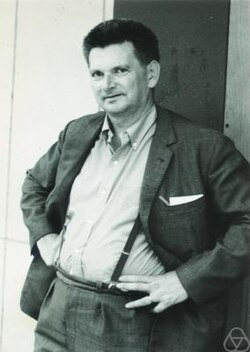

René Thom | |
|---|---|
 Thom in 1970 | |
| Born | 2 September 1923 Montbéliard, France |
| Died | 25 October 2002 (aged 79) Bures-sur-Yvette, France |
| Alma mater | École Normale Supérieure, University of Paris |
| Known for | Catastrophe theory Cobordism Gradient conjecture Quasi-fibration Splitting lemma Thom conjecture Thom isomorphism Thom space Thom transversality theorem Thom's first isotopy lemma Thom–Porteous formula Thom–Sebastiani Theorem Dold–Thom theorem |
| Children | Françoise Thom |
| Awards | Fields Medal (1958) Brouwer Medal (1970) John von Neumann Lecture Prize (1976) |
| Scientific career | |
| Fields | Mathematics |
| Institutions | University of Strasbourg Université Joseph Fourier Institut des Hautes Études Scientifiques |
| Thesis | Espaces fibrés en sphères et carrés de Steenrod (1951) |
| Henri Cartan | |
Doctoral students | David Trotman |
René Frédéric Thom (French: [ʁəne tɔm]; 2 September 1923 – 25 October 2002) was a French mathematician, who received the Fields Medal in 1958.
He made his reputation as a topologist, moving on to aspects of what would be called singularity theory; he became world-famous among the wider academic community and the educated general public for one aspect of this latter interest, his work as the founder of catastrophe theory (later developed by Christopher Zeeman).[1][2][3][4][5]
René Thom grew up in a modest family in Montbéliard, Doubs and obtained a Baccalauréat in 1940. After the German invasion of France, his family took refuge in Switzerland and then in Lyon. In 1941 he moved to Paris to attend Lycée Saint-Louis and in 1943 he began studying mathematics at École Normale Supérieure, becoming agrégé in 1946.[6]
He received his PhD in 1951 from the University of Paris. His thesis, titled Espaces fibrés en sphères et carrés de Steenrod (Sphere bundles and Steenrod squares), was written under the direction of Henri Cartan.[7]
After a fellowship at Princeton University Graduate College (1951–1952), he became Maître de conférences at the Universities of Grenoble (1953–1954) and Strasbourg (1954–1963), where he was appointed Professor in 1957. In 1964 he moved to the Institut des Hautes Études Scientifiques, in Bures-sur-Yvette, where he worked until 1990.[8]
In 1958, Thom received the Fields Medal at the International Congress of Mathematicians in Edinburgh for the foundations of cobordism theory, which were already present in his thesis.[9] He was invited speaker at the International Congress of Mathematicians two more times: in 1970 in Nice[10] and 1983 in Warsaw (which he did not attend).[11]
He was awarded the Brouwer Medal in 1970,[12] the Grand Prix Scientifique de la Ville de Paris in 1974, and the John von Neumann Lecture Prize in 1976.[13] He became the first president, together with Louis Néel, of the newly established Fondation Louis-de-Broglie In 1973 [14] and was elected Member of the Académie des Sciences of Paris in 1976.[15]
Salvador Dalí paid homage to René Thom with the paintings The Swallow's Tail and Topological Abduction of Europe.[16]
While René Thom is most known to the public for his development of catastrophe theory between 1968 and 1972,[17] his academic achievements concern mostly his mathematical work on topology.[18][19]
In the early 1950s, it concerned what are now called Thom spaces, characteristic classes, cobordism theory, and the Thom transversality theorem. Another example of this line of work is the Thom conjecture, versions of which have been investigated using gauge theory. From the mid 1950s he moved into singularity theory, of which catastrophe theory is just one aspect, and in a series of deep (and at the time obscure) papers between 1960 and 1969 developed the theory of stratified sets and stratified maps, proving a basic stratified isotopy theorem describing the local conical structure of Whitney stratified sets, now known as the Thom–Mather isotopy theorem. Much of his work on stratified sets was developed so as to understand the notion of topologically stable maps, and to eventually prove the result that the set of topologically stable mappings between two smooth manifolds is a dense set.
Thom's lectures on the stability of differentiable mappings, given at the University of Bonn in 1960, were written up by Harold Levine and published in the proceedings of a year long symposium on singularities at Liverpool University during 1969–70, edited by C. T. C. Wall. The proof of the density of topologically stable mappings was completed by John Mather in 1970, based on the ideas developed by Thom in the previous ten years. A coherent detailed account was published in 1976 by Christopher Gibson, Klaus Wirthmüller, Andrew du Plessis, and Eduard Looijenga.[20]
During the last twenty years of his life Thom's published work was mainly in philosophy and epistemology, and he undertook a reevaluation of Aristotle's writings on science. In 1992, he was one of eighteen academics who sent a letter to Cambridge University protesting against plans to award Jacques Derrida an honorary doctorate.[21]
Beyond Thom's contributions to algebraic topology, he studied differentiable mappings, through the study of generic properties. In his final years, he turned his attention to an effort to apply his ideas about structural topography to the questions of thought, language, and meaning in the form of a "semiophysics".
{kind=link}